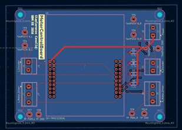

Senior Design project focused on real-time speed control, embedded firmware, and custom PCB design for a differential-drive autonomous ground vehicle.
I collaborated with a team of 10 electrical engineers to develop a differential-drive autonomous ground vehicle for Senior Design. My primary responsibility was the development of the Motor Control Subsystem, which controlled the left and right drive motors of the vehicle.
The goal of this subsystem was to convert high-level velocity commands into stable wheel motion using real-time embedded control. This required combining control theory, embedded software, PCB design, and system integration.
I modeled the brushed DC motors and designed discrete PI speed-control loops in Simulink. These controllers were used to regulate motor velocity using encoder feedback.
I then developed real-time embedded C firmware on an ARM microcontroller to implement the discrete controller. The firmware handled motor command processing, PWM output, direction control, and feedback from quadrature encoders.
I also designed a custom 2-layer Motor Control PCB in KiCad to organize the motor control hardware and simplify system integration. The PCB helped connect the microcontroller, motor drivers, encoder signals, and supporting hardware in a cleaner and more reliable layout.

The motor control subsystem met the target performance specifications for both the left and right motors. The system achieved less than 1 second rise time, less than 3 seconds settling time, and less than 10% overshoot.
The plots below show the measured motor velocity response compared to the commanded setpoint. The measured velocity tracks the 2500 ticks/s setpoint for both motors, demonstrating closed-loop speed regulation.

Right Motor Step Response: Measured velocity response tracking a 2500 ticks/s setpoint.

Left Motor Step Response: Measured velocity response tracking a 2500 ticks/s setpoint.
This project strengthened my experience in embedded control systems, real-time firmware, motor feedback, PCB design, and practical system integration. It also showed me the importance of validating control theory on physical hardware, where noise, wiring, timing, and mechanical effects all influence system behavior.